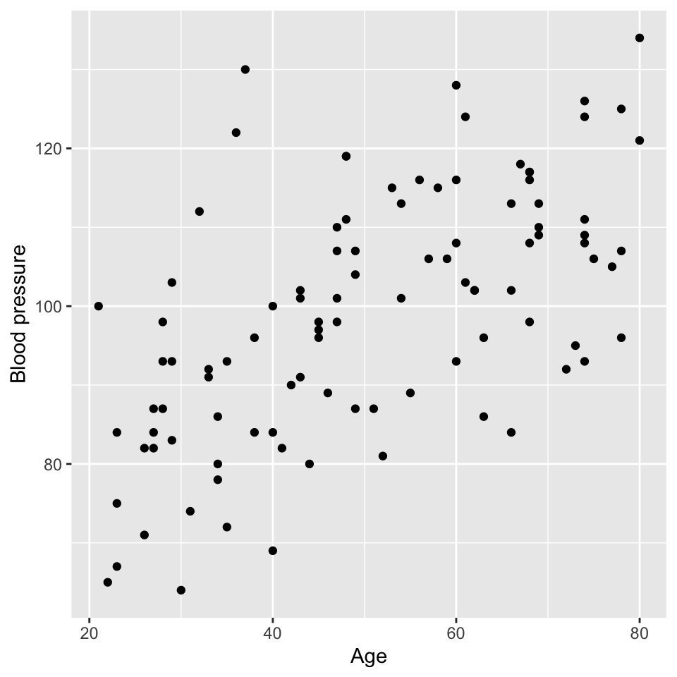
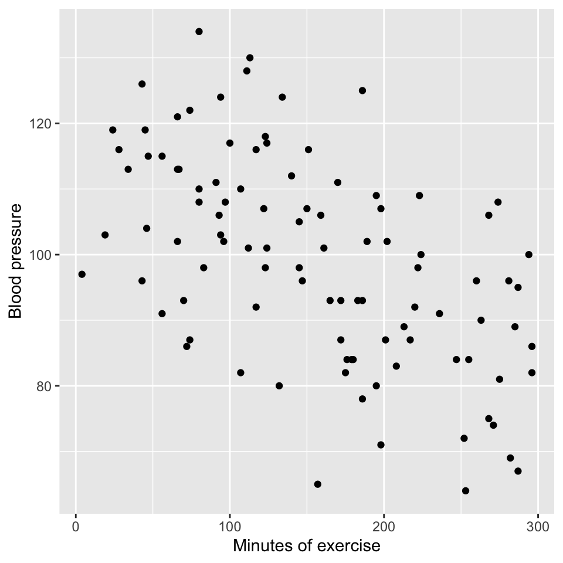
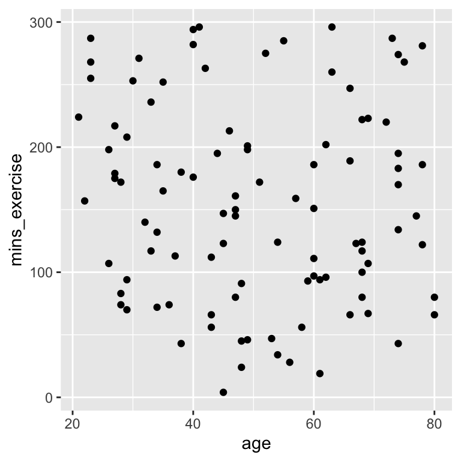

X age mins_exercise bp
1 1 38 180 84
2 2 68 100 117
3 3 45 147 96
4 4 73 287 95
5 5 77 145 105
6 6 23 268 75Multiple regression (L4)
This chapter contains the content of the fourth lecture of the course BIO144 Data Analysis in Biology at the University of Zurich.
Introduction
We previously looked at whether blood pressure is associated with age. This is an important question, because blood pressure has many health implications. However, blood pressure is not only associated with age, but also with other factors, such as weight, height, and lifestyle. In this chapter, we will look at how to investigate the association between blood pressure and multiple explanatory variables.
When we have multiple explanatory variables, we are often interested in questions such as:
- Question 1: As an ensemble, are the explanatory variables associated with the response?
- Question 2: Are each of the explanatory variables associated with the response?
- Question 3: What proportion of variability is explained?
- Question 4: Are some explanatory variables more important than others?
Lets get an example of blood pressure data, with age and lifestyle as two explanatory variables. Lifestyle will be a continuous variable that is the number of minutes of exercise per week.
Here is a look at the dataset:
We can get insights by visualising the data by looking at three graphs:
- Age vs blood pressure. This is the graph of the response variable (blood pressure) against one of the explanatory variables (age). It looks like there is evidence of a positive relationship.

- Minutes of exercise vs blood pressure. This is a graph of the response variable (blood pressure) against the other explanatory variable (minutes of exercise). It looks like there is evidence of a negative relationship.

- Age vs minutes of exercise. This is a graph of the two explanatory variables against each other. It looks like there is no relationship.
We can also look at this in a plot with three axes. The y-axis is blood pressure, the x-axis is age, and the z-axis is minutes of exercise. Here is a 3d plot that we can interactive with and rotate:
All very good, and this makes sense. We can see that blood pressure is positively associated with age and negatively associated with minutes of exercise. But we need to be more quantitative about this. We need to build a model that relates blood pressure to age and minutes of exercise.
The multiple linear regression model
The model
The multiple linear regression model is an extension of the simple linear regression model. Recall the simple linear regression model is:
\[y_i = \beta_0 + \beta_1 x_i + \epsilon_i\]
where:
- \(y_i\) is the response variable
- \(x_i\) is the explanatory variable
- \(\beta_0\) is the intercept
- \(\beta_1\) is the slope
- \(\epsilon_i\) is the error term.
The multiple linear regression model with two explanatory variables is:
\[y_i = \beta_0 + \beta_1 x_i^{(1)} + \beta_2 x_i^{(2)} + \epsilon_i\]
where:
- \(x_i^{(1)}\) and \(x_i^{(2)}\) are the two explanatory variables
- \(\beta_0\) is the intercept
- \(\beta_1\) is the slope for the first explanatory variable
- \(\beta_2\) is the slope for the second explanatory variable
Note that the intercept \(\beta_0\) is the value of the response variable when all explanatory variables are zero. In this example, it would be the blood pressure for someone that is 0 years old and does 0 minutes of exercise per week. This is not a particularly useful scenario, but it is a necessary mathematical construct that helps us to build the model.
We can extend the multiple regression model to have an arbitrary number of explanatory variables:
\[y_i = \beta_0 + \beta_1 x_i^{(1)} + \beta_2 x_i^{(2)} + \ldots + \beta_p x_i^{(p)} + \epsilon_i\]
Where:
\(x_i^{(1)}, x_i^{(2)}, \ldots, x_i^{(p)}\) are the \(p\) explanatory variables and all else is as before.
or with summation notation:
\[y_i = \beta_0 + \sum_{j=1}^p \beta_j x_i^{(j)} + \epsilon_i\]
Just like in simple linear regression, we can estimate the parameters \(\beta_0, \beta_1, \ldots, \beta_p\) using the method of least squares. The least squares method minimizes the sum of the squared residuals:
\[\sum_{i=1}^n \epsilon_i^2 = \sum_{i=1}^n (y_i - \hat{y}_i)^2\]
where \(\hat{y}_i\) is the predicted value of the response variable for the \(i\)th observation:
\[\hat{y}_i = \hat{\beta}_0 + \sum_{j=1}^p \hat{\beta}_j x_i^{(j)}\] where:
\(\hat{\beta}_0, \hat{\beta}_1, \ldots, \hat{\beta}_p\) are the estimated parameters.
Think, Pair, Share (#two-shape)
Graphically, a linear regression with one explanatory variable is a line. What is a geometric representation of linear regression with two explanatory variables?
The blood pressure example
Lets write the equation for the blood pressure data:
\[bp_i = \beta_0 + \beta_1 \cdot age_i + \beta_2 \cdot mins\_exercise_i + \epsilon_i\]
where:
- \(bp_i\) is the blood pressure for the \(i\)th observation
- \(age_i\) is the age for the \(i\)th observation
- \(mins\_exercise_i\) is the minutes of exercise for the \(i\)th observation
- \(\beta_0\) is the intercept
- \(\beta_1\) is the slope for age
- \(\beta_2\) is the slope for minutes of exercise
- \(\epsilon_i\) is the error term
and the error term is assumed to be normally distributed with mean 0 and constant variance, just as was the case for simple linear regression:
\[\epsilon_i \sim N(0, \sigma^2)\]
We already know a lot!
First, the five assumptions of the multiple linear regression model are the same as for the simple linear regression model:
- Normality of residuals.
- Homoscedasticity = constant variance of residuals.
- Independence of residuals.
- Linearity.
- No outliers.
Think, Pair, Share (#assump-match)
Review how we can check these assumptions in the simple linear regression model:
Match the following to the assumptions above:
- Graph of size of residuals vs. fitted values.
- QQ-plot.
- Graph of residuals vs. fitted values.
- Graph of leverage vs. standardized residuals.
And what is missing?
Second, we know how to estimate the parameters \(\beta_0, \beta_1, \ldots, \beta_p\) using the method of least squares.
Third, we know how to test the significance of the parameters using the \(t\)-test.
Fourth, we know how to calculate the confidence intervals for the parameters, and to make a confidence band.
Fifth, we know how to calculate the \(R^2\) value to measure the goodness of fit of the model.
Sixth, we know how to infer the strength of the relationship between the response variable and an explanatory variable.
Seventh, we know how to make predictions using the model, and to make a prediction band.
What we dont know is how to answer the four questions already mentioned above:
- Question 1: As an ensemble, are the explanatory variables associated with the response?
- Question 2: Are each of the explanatory variables associated with the response?
- Question 3: What proportion of variability is explained?
- Question 4: Are some explanatory variables more important than others?
Lets answer these questions using the blood pressure example.
Fitting the model
In R, we can fit a multiple linear regression model using the lm() function in a very similar way to the simple linear regression model. Here is the code for the blood pressure example. To fit two explanatory variables, we simply add the second variable to the formula using the + sign:
m1 <- lm(bp ~ age + mins_exercise, data = bp_data)Checking the assumptions
We can check the assumptions of the multiple linear regression model using the same methods as for the simple linear regression model. Here is the code for the blood pressure example:
# Check the assumptions
par(mfrow=c(2,2))
plot(m1, which = c(1,2,3,5), add.smooth = FALSE)We see that the assumptions are met for the blood pressure example:
- Normality of residuals: The QQ-plot shows that the residuals are normally distributed.
- Homoscedasticity: The scale-location plot shows that the residuals have constant variance.
- Independence of residuals: No evidence of pattern or clustering. But also need to know about study design to properly assess independence.
- Linearity: The residuals vs. fitted values plot shows no clear pattern in the residuals.
- No outliers: No points with high leverage or high residuals.
Question 1: As an ensemble, are the explanatory variables associated with the response?
To answer this question, we can use the \(F\)-test. The null hypothesis is that the residual error variance is not significantly different from what would be expected by chance. The alternative hypothesis is that the residuals error variance is significantly lower than what would be expected by chance.
This hypothesis is similar to the null hypothesis that all of the slopes (regression coefficients) are equal to zero. If the null hypothesis is rejected, then at least one of the regression coefficients is significantly different from zero, and we can conclude that the explanatory variables are associated with the response.
OK, back to the \(F\)-test.
Note
The \(F\)-test is called the \(F\)-test because it is based on the \(F\)-distribution, which was named after the statistician Sir Ronald A. Fisher. Fisher developed this statistical method as part of his pioneering work in analysis of variance (ANOVA) and other fields of experimental design and statistical inference.
Key Points Behind the Name:
- \(F\)-Distribution: The test statistics of the \(F\)-test (that is, the \(F\)-statistic) follows the \(F\)-distribution under the null hypothesis. This distribution arises when comparing the ratio of two independent sample variances or mean squares.
- Ronald Fishers Contribution: Fisher introduced the \(F\)-distribution in the early 20th century as a way to test hypotheses about the equality of variances and to analyze variance in regression and experimental designs. The \(F\) in \(F\)-distribution honors him.
- Variance Ratio: The test statistic for the \(F\)-test is the ratio of two variances (termed mean squares in this case), making the \(F\)-distribution the natural choice for modeling this ratio when the null hypothesis is true.
The \(F\)-test is widely used in various contexts, including comparing variances, assessing the significance of regression models, conducting ANOVA to test for differences among group means, and comparing different models.
But what is the \(F\)-statistic?
The F-statistic is calculated as the ratio of the mean square of the model to the mean square error.
Heres the formula for the F-statistic: \[\frac{MSM}{MSE}\]
where: * \(MSM\) is the mean square of the model. * \(MSE\) is the mean square error.
What on earth does that mean? Put simply, the F-statistic is a measure of how well the model fits the data. It compares the how much variability (variance) is explained to how much is not explained.
The mean square of the model (\(MSM\)) is a measure of how much variability is explained.
The mean square of the residuals (\(MSE\)) is a measure of how much variability is not explained.
If there are strong relationships in our data, a lot of variance will be explained (large \(MSM\)) and not much will remain unexplained (low \(MES_{residual}\)). The \(F\)-statistic will be large.
If there are weak relationships in our data, not much variance will be explained (low \(MSM\)) and a lot will remain unexplained (large \(MES_{residual}\)). The F-statistic will be small.
So, if the \(F\)-statistic is large, we suspect that we can reject the null hypothesis that the explained explained variance is greater than we would expect by chance (i.e., when the slopes are zero). If the \(F\)-statistic is small, we suspect that we cannot reject the null hypothesis that the explained variance is no greater than we would expect by chance, and we suspect that we cannot reject the null hypothesis that the slopes are zero.
The \(F\)-statistic is then compared to the \(F\)-distribution with \(p\) and \(n-p-1\) degrees of freedom, where \(p\) is the number of explanatory variables and \(n\) is the number of observations.
Calculating the F-statistic
The mean square of a model is the sum of squares of the model divided by the degrees of freedom of the model:
\[MSM = \frac{SSM}{df_{model}}\]
where \(SSM\) is the sum of squares of the model and \(df_{model}\) is the degrees of freedom of the model.
The mean square error is the sum of squares of the residuals divided by the degrees of freedom of the residuals:
\[MSE = \frac{SSE}{df_{residuals}}\]
where \(SSE\) is the sum of squares of the residuals and \(df_{residuals}\) is the degrees of freedom of the residuals.
SSM, SSE, and SST
This is a recap, since its the same as we learned in the simple linear regression model.
\(SST\): The total sum of squares is the sum of the squared differences between the observed values of the response variable and the mean of the response variable. The \(SST\) is a measure of the total variability in the response variable.
The formula for the \(SST\) is:
\[SST = \sum_{i=1}^n (y_i - \bar{y})^2\]
where \(y_i\) is the observed value of the response variable for the \(i\)th observation, \(\bar{y}\) is the mean of the response variable, and \(n\) is the number of observations.
\(SSE\): The residual sum of squares (\(SSE\)) is the sum of the squared differences between the observed values of the response variable and the predicted values of the response variable. The equation is:
\[SSE = \sum_{i=1}^{n} (y_i - \hat{y}_i)^2\]
where \(y_i\) is the observed value of the response variable, \(\hat{y}_i\) is the predicted value of the response variable, and \(n\) is the number of observations.
\(SSM\): The model sum of squares is the sum of squares explained by the model. The model sum of squares can be calculated as:
\[SSM = SST - SSE\]
That is, the model sum of squares is the difference between the total sum of squares and the residual sum of squares.
Total degrees of freedom
The total degrees of freedom are the degrees of freedom associated with the total sum of squares (\(SST\)).
In order to calculate the \(SST\), we need to calculate the mean of the response variable. This implies that we estimate one parameter (the mean of the response variable). As a consequence, we lose one degree of freedom and so there remain \(n-1\) degrees of freedom associated with the total sum of squares (where \(n\) is the number of observations).
What do we mean by lose one degree of freedom? Imagine we have ten observations. We can calculate the mean of these ten observations. But if we know the mean and nine of the observations, we can calculate the tenth observation. So, in a sense, once we calculate the mean, the value of one of the ten observations is fixed. This is what we mean by losing one degree of freedom. When we calculate and use the mean, one of the observations loses its freedom.
For example, take the numbers 1, 3, 5, 7, 9. The mean is 5. The sum of the squared differences between the observations and the mean is \((1-5)^2 + (3-5)^2 + (5-5)^2 + (7-5)^2 + (9-5)^2 = 20\). This is the total sum of squares. The degrees of freedom are \(5-1 = 4\).
The total degrees of freedom are the total number of observations minus one. That is, the total sum of squares is associated with \(n-1\) degrees of freedom.
Another perspective in which to think about the total sum of squares and total degrees of freedom is to consider the intercept only model. The intercept only model is a model that only includes the intercept term. The equation of this model would be:
\[y_i = \beta_0 + \epsilon_i\] The sum of the square of the residuals for this model is minimised when the predicted value of the response variable is the mean of the response variable. That is, the least squares estimate of \(\beta_0\) is the mean of the response variable:
\[\hat{\beta}_0 = \bar{y}\]
Hence, the predicted value of the response variable is the mean of the response variable. The equation is:
\[\hat{y}_i = \bar{y} + \epsilon_i\]
The error term is therefore:
\[\epsilon_i = y_i - \bar{y}\] And the total sum of squares is:
\[SST = \sum_{i=1}^n (y_i - \bar{y})^2\]
where \(\hat{y}_i\) is the predicted value of the response variable for the \(i\)th observation, \(\bar{y}\) is the mean of the response variable, and \(\epsilon_i\) is the residual for the \(i\)th observation.
The intercept only model involves estimating only one parameter, so the total degrees of freedom are the total number of observations minus one \(n - 1\).
Therefore, the total degrees of freedom are the total number of observations minus one.
Bottom line: \(SST\) is the residual sum of squares when we fit the intercept only model. The total degrees of freedom are the total number of observations minus one.
Model degrees of freedom
The model degrees of freedom are the degrees of freedom associated with the model sum of squares (\(SSM\)).
In the case of the intercept only model, we estimated one parameter, the mean of the response variable.
In the case of a regression model with one continuous explanatory variable, we estimate one parameter in addition to the intercept. That is, we estimate the slope of the explanatory variable.
In the case of a regression model with two continuous explanatory variables, we estimate two parameters in addition to the intercept. That is, we estimate the slopes of the two explanatory variables.
More generally, in the case of a regression model with \(p\) continuous explanatory variables, we estimate \(p\) parameters in addition to the intercept. That is, we estimate the slopes of the \(p\) explanatory variables.
Each time we estimate a new parameter, we lose a degree of freedom.
Think, Pair, Share (#lost-degrees)
How many degrees of freedom are lost when this model is fit?:
\[y_i = \beta_0 + \beta_1 x_{1i} + \beta_2 x_{2i} + \epsilon_i\]
The model has three parameters: \(\beta_0\), \(\beta_1\), and \(\beta_2\). So, three degrees of freedom are lost. These three degrees of freedom are one for the intercept (\(\beta_0\)) and two for the slopes of each of the two (\(p\)) continuous explanatory variables (\(\beta_1\) and \(\beta_2\)).
In the case of a regression model with \(p\) continuous explanatory variables, we estimate \(p+1\) parameters when we include the degree of freedom used by the intercept. But recall that the hypothesis we are testing is that the slopes of the explanatory variables are zero. This means we are interested in the sum of squares explained by the model with the two slopes, compared to the sum of squares explained by the model with only the intercept. Hence the relevant degrees of freedom of the model are the difference between the degrees of freedom of the model with the two slopes and the degrees of freedom of the model with only the intercept. That is, the model degrees of freedom are \(p\).
Residual degrees of freedom
The residual degrees of freedom are the total degrees of freedom (\(n-1\)) minus the degrees of freedom used by the regression model (\(p\)).
Therefore, the residual degrees of freedom are the degrees of freedom remaining after we estimate the intercept and the slopes of the explanatory variables. There is one intercept and \(p\) slopes, so the residual degrees of freedom are \(n-1-p\).
Finally
We have everything we need to calculate the two mean squares:
\[MSE_{\text{model}} = \frac{SSM}{p}\] \[MSE_{\text{residual}} = \frac{SSE}{n-1-p}\]
Why divide by the degrees of freedom? The more observations we have, the greater will be the total sum of squares. The more observations we have, the greater will be the residual sum of squares. So it is not very informative to compare totals. Rather, we need to compare the mean of the sums of squares. Except we dont calculate the mean by dividing by the number of observations. Rather we divide by the degrees of freedom. The total mean square is an estimate of the variance of the response variable. And the residual mean square is an estimate of the variance of the residuals.
\(SST\), \(SSM\), \(SSE\), and degrees of freedom
Just a reminder and a summary of some of the material above:
- \(SST\): degrees of freedom = \(n-1\)
- \(SSM\): degrees of freedom = \(p\) *\(SSE\): degrees of freedom = \(n-1-p\)
The sum of squares add up:
\[SST = SSM + SSE\]
and the degrees of freedom add up
\[(n-1) = (p) + (n-1-p)\]
Is my \(F\)-statistic large or small?
Recall that The \(F\)-statistic is calculated as the ratio of the mean square of the model to the mean square error. And that a large \(F\)-statistic is evidence against the null hypothesis that the slopes of the explanatory variables are zero. And that a small \(F\)-statistic is evidence to not reject the null hypothesis that the slopes of the explanatory variables are zero.
But how big does the F-statistic need to be in order to confidently reject the null hypothesis?
The null hypothesis that the explained variance of the model is no greater than would be expected by chance. Here, by chance means that the slopes of the explanatory variables are zero.
\[H_0: \beta_1 = \beta_2 = \ldots = \beta_p = 0\] The alternative hypothesis is that the explained variance of the model is greater than would be expected by chance. This would occur if the slopes of some or all of the explanatory variables are not zero.
\[H_1: \beta_1 \neq 0 \text{ or } \beta_2 \neq 0 \text{ or } \ldots \text{ or } \beta_p \neq 0\] To test this hypothesis we are going to, as usual, calculate a \(p\)-value. The \(p\)-value is the probability of observing a test statistic as or more extreme as the one we observed, assuming the null hypothesis is true. To do this, we need to know the distribution of the test statistic under the null hypothesis. The distribution of the test statistic under the null hypothesis is known as the \(F\)-distribution.
The \(F\)-distribution has two degrees of freedom values associated with it: the degrees of freedom of the model and the degrees of freedom of the residuals. The degrees of freedom of the model are the number of parameters estimated by the model corresponding to the null hypothesis. The degrees of freedom of the residuals are the total degrees of freedom minus the degrees of freedom of the model.
Here is the \(F\)-distribution with 2 and 99 degrees of freedom:
The F-distribution is skewed to the right and has a long tail. The area to the right of 3.89 is shaded in red. This area represents the probability of observing an F-statistic as or more extreme as 3.89, assuming the null hypothesis is true. This probability is the \(p\)-value of the hypothesis test.
The \(F\)-statistic and \(F\)-test is briefly recaptured in 3.1.f) of the Stahel script, but see also Mat183 chapter 6.2.5. It uses the fact that
\[\frac{MSM}{MSE} = \frac{SSM/p}{SSE/(n-1-p)} \sim F_{p,n-1-p}\]
follows an \(F\)-distribution with \(p\) and \((n-1-p)\) degrees of freedom, where \(p\) are the number of continuous variables, \(n\) the number of data points.
- \(SSE=\sum_{i=1} ^n(y_i-\hat{y}_i)^2\) is the residual sum of squares
- \(SSM = SST - SSE\) is the sum of squares of the model
- \(SST=\sum_{i=1}^n(y_i-\overline{y})^2\) is the total sum of squares
- \(n\) is the number of data points
- \(p\) is the number of explanatory variables in the regression model
Source of variance table
The sources of variance table is a table that conveniently and clearly gives all of the quantities mentioned above. It breaks down the total sum of squares into the sum of squares explained by the model and the sum of squares due to error. The source of variance table is used to calculate the \(F\)-statistic.
| Source | Sum of squares | Degrees of freedom | Mean square | F-statistic |
|---|---|---|---|---|
| Model | \(SSM\) | \(p\) | \(MSM = SSM / p\) | \(\frac{MSM}{MSE_{error}}\) |
| Error | \(SSE\) | \(n - 1 - p\) | \(MSE_{error} = SSE / (n - 1 - p)\) | |
| Total | \(SST\) | \(n - 1\) |
The blood pressure example
How many observations?
[1] 100
Think, Pair, Share (#three-degrees)
We have two explanatory variables (age and minutes of exercise per week).
- How many total degrees of freedom?
- How many degrees of freedom for the regression model?
- How many degrees of freedom for the residuals?
Fit the model in R:
m1 <- lm(bp ~ age + mins_exercise, data = bp_data)Get the F-statistic:
summary(m1)$fstatistic value numdf dendf
79.80361 2.00000 97.00000 Get the p-value:
p_value <- pf(summary(m1)$fstatistic[1],
summary(m1)$fstatistic[2],
summary(m1)$fstatistic[3],
lower.tail = FALSE)
p_value value
3.227666e-21 (The R-function pf calculates the cumulative probability distribution function of the F-distribution.)
And here is how we can get that information from the summary function. Look at the final line of the output:
summary(m1)
Call:
lm(formula = bp ~ age + mins_exercise, data = bp_data)
Residuals:
Min 1Q Median 3Q Max
-19.211 -7.032 -0.853 5.769 33.586
Coefficients:
Estimate Std. Error t value Pr(>|t|)
(Intercept) 88.65837 3.75256 23.626 < 2e-16 ***
age 0.51764 0.05768 8.974 2.2e-14 ***
mins_exercise -0.10086 0.01246 -8.094 1.7e-12 ***
---
Signif. codes: 0 '***' 0.001 '**' 0.01 '*' 0.05 '.' 0.1 ' ' 1
Residual standard error: 9.773 on 97 degrees of freedom
Multiple R-squared: 0.622, Adjusted R-squared: 0.6142
F-statistic: 79.8 on 2 and 97 DF, p-value: < 2.2e-16Question 2: Which variables are associated with the response?
As we did for simple linear regression, we can perform a \(t\)-test for each explanatory variable to determine if it is associated with the response. As before, the null hypothesis for each \(t\)-test is that the slope of the explanatory variable is zero. The alternative hypothesis is that the slope of the explanatory variable is not zero.
summary(m1)$coef Estimate Std. Error t value Pr(>|t|)
(Intercept) 88.6583701 3.75256098 23.626097 5.081665e-42
age 0.5176392 0.05767978 8.974362 2.195855e-14
mins_exercise -0.1008620 0.01246203 -8.093547 1.697396e-12Again, a 95% CI for each slope estimate \(\hat\beta_j\) can be calculated with R:
confint(m1) 2.5 % 97.5 %
(Intercept) 81.2105754 96.10616493
age 0.4031609 0.63211765
mins_exercise -0.1255957 -0.07612834Reminder: The 95% confidence interval is \([\hat\beta - c \cdot \sigma^{(\beta)} ; \hat\beta + c \cdot \sigma^{(\beta)}]\), where \(c\) is the 97.5% quantile of the \(t\)-distribution with \(n-p\) degrees of freedom).
We can also use the tbl_regression function within the gtsummary package to get a publication ready table of the coefficients and confidence intervals:
library(gtsummary)
tbl_regression(m1)| Characteristic | Beta | 95% CI1 | p-value |
|---|---|---|---|
| age | 0.52 | 0.40, 0.63 | <0.001 |
| mins_exercise | -0.10 | -0.13, -0.08 | <0.001 |
| 1 CI = Confidence Interval | |||
Important
However Please insert a note into your brain that we are dealing here with an ideal case of uncorrelated explanatory variables. Youll learn later in the course about what happens when explanatory variables are correlated.
Question 3: What proportion of variability is explained?
Multiple \(R^2\)
We can calculate the \(R^2\) value for the multiple linear regression model just like we already did for a simple linear regression model. The \(R^2\) value is the proportion of variability in the response variable that is explained by the model. As before, the \(R^2\) value ranges from 0 to 1, where 0 indicates that the model does not explain any variability in the response variable, and 1 indicates that the model explains all the variability in the response variable.
For multiple linear regression, we often use the term multiple \(R^2\) to distinguish it from the \(R^2\) value for simple linear regression. The multiple \(R^2\) is the proportion of variability in the response variable that is explained by the model, taking into account all the explanatory variables in the model.
As before, for simple linear regression, the multiple \(R^2\) value is calculated as the sum of squares explained by the model divided by the total sum of squares:
\[R^2 = \frac{SSM}{SST}\]
where \(SSM\) is the sum of squares explained by the model and \(SST\) is the total sum of squares, and \(SSM = SST - SSE\).
For the blood pressure data:
[1] 0.6219904\(R^2\) for multiple linear regression can also be calculated as the squared correlation between \((y_1,\ldots,y_n)\) and \((\hat{y}_1,\ldots,\hat{y}_n)\), where the \(\hat y\) are the fitted values from the model. The fitted values are calculated as:
\[\hat{y}_i = \hat\beta_0 + \hat\beta_1 x^{(1)} + \ldots + \hat\beta_m x^{(m)}\]
In R:
r_squared <- cor(m1$fitted.values, bp_data$bp)^2
r_squared[1] 0.6219904Or:
sss <- anova(m1)
SSM <- sss$`Sum Sq`[1] + sss$`Sum Sq`[2]
SST <- sum(sss$`Sum Sq`)
R_squared <- SSM / SST
R_squared[1] 0.6219904Adjusted \(R^2\)
However, we have a little problem to address. The \(R^2\) value increases as we add more explanatory variables to the model, even if the additional variables are not associated with the response. This is because the \(R^2\) value is calculated as the proportion of variability in the response variable that is explained by the model. As we add more explanatory variables to the model, the model will always explain more variability in the response variable, even if the additional variables are not associated with the response. Some of the variance will be explained by chance.
Here is an example of this problem. First, heres the explanatory power of the model with only age and minutes of exercise as the explanatory variables:
[1] 0.6219904Now, we can add a new explanatory variable to the blood pressure model that is not associated with the response:
bp_data$random_variable <- rnorm(nrow(bp_data))
m2 <- lm(bp ~ age + mins_exercise + random_variable, data = bp_data)
summary(m2)$r.squared[1] 0.6264181The \(R^2\) value for the model with the random variable is higher than the \(R^2\) value for the model without the random variable. This is because the model with the random variable explains more variability in the response variable, even though the random variable is not associated with the response.
To address this problem, we can use the adjusted \(R^2\) value. The adjusted \(R^2\) value is calculated as:
\[R^2_{\text{adj}} = 1 - \frac{SSE / (n - p - 1)}{SST / (n - 1)}\]
where * \(SSE\) is the sum of squared errors * \(SST\) is the total sum of squares * \(n\) is the number of observations * \(p\) is the number of explanatory variables in the model.
Or put another way:
\[R^2_{adj} = 1-(1-R^2 )\frac{n-1}{n-p-1}\] In this form, we can see that as \(p\) increases (as we add explanatory variables) the term \((n-1)/(n-p-1)\) increases, and the adjusted \(R^2\) value will decrease if the additional variables are not associated with the response.
Take home: when we want to compare the explanatory power of models that differ in the number of explanatory variables, we should use the adjusted \(R^2\) value.
Question 4: Are some explanatory variables more important than others?
How important are the explanatory variables and how important are they relative to each other?
Think, Pair, Share (#variable-importance)
How might we assess how important is each of the explanatory variables, and how important they are relative to each other?
The importance of an explanatory variable can be assessed by looking at the size of the coefficient for that variable. The larger the coefficient, the more important the variable is in explaining the response variable.
It is, however, important to remember that the size of the coefficient depends on the scale of the explanatory variable. If the explanatory variables are on different scales, then the coefficients will be on different scales and cannot be directly compared.
In our example, the age variable is measured in years, so the coefficient is in units mmHg (pressure) per year. The mins_exercise variable is measured in minutes, so the coefficient is in units mmHg per minute. The coefficients are on different scales and cannot be directly compared. Furthermore, the value of the coefficients would change if we measured age in months or minutes of exercise in hours.
There are other perspectives we can take when were assessing importance. For example, we cannot change our age, but we can change the number of minutes of exercise. So, the practical importance of the two variables is quite different in that sense also.
To compare the importance of the explanatory variables that are measured on different scales, we can standardize the variables before fitting the model. This means that we subtract the mean of the variable and divide by the standard deviation. This puts all the variables on the same scale, so the coefficients can be directly compared. The coefficients are then in units of the response variable per standard deviation of the explanatory variable.
However, the coefficients are then not in the original units of the explanatory variables, so it is not always easy to interpret the coefficients. So while we can compare the coefficients, they have lost a bit of their original meaning and are not so easy to interpret.
One way to relate the coefficients in this case is to realise that to compensate for the blood pressure increase associated with one year of age, one would need to exercise for a certain number of minutes more.
Think, Pair, Share (#exercise-age)
How many minutes of exercise per week would we need to add to our fitness schedule to compensate for the blood pressure increase associated with one year of age?
An elephant in the room: collinearity
In the blood pressure data there is no evidence of correlation (collinearity) between the explanatory variables. Recall that we can check for correlation between the explanatory variables by making a scatter plot of the two explanatory variables.

The lack of pattern is good, because with no evidence of collinearity between the explanatory variables the model coefficients are stable and easy to interpret. They are stable in the sense that including or excluding one of the explanatory variables does not change the coefficients of the other variables much.
If there is correlation between the explanatory variables, then the model coefficients can be unstable and difficult to interpret. This is because the model cannot distinguish between the effects of the correlated variables.
Here is a new version of the blood pressure data in which the age and minutes of exercise variables are correlated:
Now we fit a multiple linear regression model to the correlated data:
Estimate Std. Error t value Pr(>|t|)
(Intercept) 114.3902120 15.3868489 7.434284 4.187345e-11
age 0.3433312 0.1708701 2.009310 4.728268e-02
mins_exercise -0.2277340 0.1469848 -1.549371 1.245493e-01There is a positive effect of age on blood pressure, and a negative effect of minutes of exercise. The age coefficient is just significant, with \(p = 0.473\). The minutes of exercise coefficient is not significant, with \(p = 0.125\).
Here is the model with only age included:
Estimate Std. Error t value Pr(>|t|)
(Intercept) 91.551025 4.44272391 20.606958 2.124161e-37
age 0.574799 0.08352313 6.881914 5.627696e-10This gives quite different results for age. The coefficient is much larger (0.57 compared to 0.34) and it is very very unlikely that the observed relationship could have occurred if the null hypothesis were true (\(p < 0.001\)).
And here is the model with only minutes of exercise:
Estimate Std. Error t value Pr(>|t|)
(Intercept) 144.3629954 3.83158396 37.677106 4.104736e-60
mins_exercise -0.4859533 0.07243686 -6.708646 1.273477e-09The same thing happens again. The coefficient for exercise is larger (-0.49 compared to -0.23) and it is very very unlikely that the observed relationship could have occurred if the null hypothesis were true (\(p < 0.001\)).
When each of the explanatory variables is included in the model separately, the coefficients are quite different from when both variables are included in the model. And when they are included in the model separately, their p-values are very low (reject null hypothesis of slope of zero), but when they are included in the model together, their p-values are much larger and give quite weak or no evidence to reject the null hypothesis of slope of zero.
These phenomena occur due to the correlation/collinearity between the explanatory variables. The model cannot distinguish between the effects of the correlated variables, so the coefficients are unstable and difficult to interpret.
Unfortunately, collinearity is a common feature of real data, and it can make the interpretation of multiple linear regression models difficult. It is sometimes possible to design observational studies to reduced or avoid collinearity, but in practice it is often difficult to escape from.
In designed experiments, it is standard to make the design of the experiments so that explanatory variables are completely independent (zero collinearity). A fully-factorial design with balanced replication is a good way to ensure that explanatory variables are independent. Two-way analysis of variance is then an appropriate statistical model. We will look at this design and analysis in a later lecture.
Collinearity also affects the interpretation of the \(R^2\) values. Collinearity will cause the collinear explanatory variables to share some of the explained variance. The \(R^2\) value of the multiple regression will then be less than the sum of the \(R^2\) values of the individual regressions of the response variable on each of the explanatory variables separately.
\(R^2\) of the age only model:
summary(m2_age)$r.squared[1] 0.3258152\(R^2\) of the mins_exercise only model:
summary(m2_mins_exercise)$r.squared[1] 0.3147137\(R^2\) of the model with both age and mins_exercise:
summary(m2_both)$r.squared[1] 0.3420969In this case the two explanatory variables are strongly correlated and so share a lot of the explained variance. The \(R^2\) value of the model with both explanatory variables is much less than the sum of the \(R^2\) values of the models with each explanatory variable separately. In fact, either of the models with only one explanatory variable is nearly as good as the model with both explanatory variables. We dont gain much from including another explanatory variable in the model when we already include one explanatory variable that is strongly correlated with the other.
Recap
Simple regression:
- How well does the model describe the data: Correlation and \(R^2\)
- Are the parameter estimates compatible with some specific value (\(t\)-test)?
- What range of parameters values are compatible with the data (confidence intervals)?
- What regression lines are compatible with the data (confidence band)?
- What are plausible values of other data (prediction band)?
Multiple regression:
- Multiple linear regression \(x_1\), \(x_2\), , \(x_m\)
- Checking assumptions.
- \(R^2\) in multiple linear regression
- \(t\)-tests, \(F\)-tests and \(p\)-values